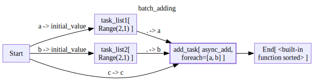
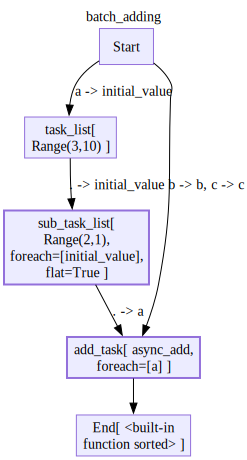
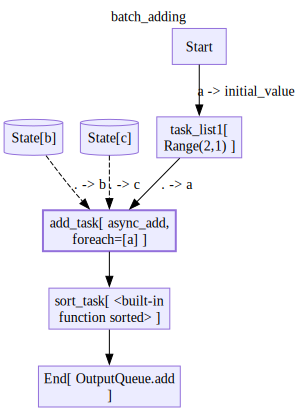

import asyncio
from ladle.diagrams import (
Define,
V,
E,
)Batching
This feature is still in Beta and will likly evolve based on user feedback.
An advanced feature of flow diagrams is that they support async batching of operations. These means that if we want to process a list of tasks asynchronously, we dont have to write a node that processes the list.
Instead, we write a node that processes a single item, and instruct Ladle to run our function on every item of a list in our input seperately.
async def async_add(a,b,c):
await asyncio.sleep(0.1)
return a+b+c
class Range:
def __init__(self,length,step=1):
self.length = length
self.step = step
def __call__(self,initial_value=0):
return list(range(initial_value,initial_value+self.length*self.step,self.step))
def __str__(self):
return f'Range({self.length},{self.step})'For_Each
We can define a diagram as follows:
with Define('batch_adding',direction='LR') as D:
V('task_list1',Range(2),inputs=['Start(initial_value=a)'])
V('task_list2',Range(2),inputs=['Start(initial_value=b)'])
V('add_task',async_add,
inputs=['task_list1(a=.)','task_list2(b=.)','Start(c=c)'],
# for each is a list of input ports to map the function on
# in this case, we have input ports a,b and c
# a and b are for each, so we will run async_add for each combination of item from a and item from b
# c is not in for_each, so it will be the same for each run
for_each=['a','b'])
# since async_add is now a foreach node, it will be called multiple times and the results will be collected into a list
# before being fed into a regular node
# we can sort the list to make sure that the results are deterministic
V('End',sorted,inputs=['add_task'])
d=D()
for trace in d.run({'a':1000,'b':100,'c':10}):
trace.pprint()Node Start:
{ 'input': {'a': 1000, 'b': 100, 'c': 10},
'output': {'a': 1000, 'b': 100, 'c': 10}}
================================================================================
Node task_list2:
{'input': {'initial_value': 100}, 'output': [100, 101]}
================================================================================
Node task_list1:
{'input': {'initial_value': 1000}, 'output': [1000, 1001]}
================================================================================
Node add_task[1]:
{'input': {'a': 1000, 'b': 101, 'c': 10}, 'output': 1111}
================================================================================
Node add_task[0]:
{'input': {'a': 1000, 'b': 100, 'c': 10}, 'output': 1110}
================================================================================
Node add_task[2]:
{'input': {'a': 1001, 'b': 100, 'c': 10}, 'output': 1111}
================================================================================
Node add_task[3]:
{'input': {'a': 1001, 'b': 101, 'c': 10}, 'output': 1112}
================================================================================
Node End:
{'input': {0: [1111, 1110, 1111, 1112]}, 'output': [1110, 1111, 1111, 1112]}
================================================================================Flat
Working with lists and lists of lists can get out of hand quickly. We also supply a flat that will flatten out nested lists
with Define('batch_adding',direction='TB') as D:
V('task_list',Range(3,step=10),inputs=['Start(initial_value=a)'])
V('sub_task_list',Range(2),
inputs=['task_list(initial_value=.)'],
for_each=['initial_value'],
# Since Range returns lists, and it is a foreach node, the output of this node will be a list of lists
# flat=True will flatten this list of lists into a single list
flat=True)
V('add_task',async_add,
inputs=['sub_task_list(a=.)','Start(b=b,c=c)'],
for_each=['a'],)
# since async_add is now a foreach node, it will be called multiple times and the results will be collected into a list
V('End',sorted,inputs=['add_task'])
d= D()
for trace in d.run({'a':1000,'b':0,'c':0}):
trace.pprint()Node Start:
{'input': {'a': 1000, 'b': 0, 'c': 0}, 'output': {'a': 1000, 'b': 0, 'c': 0}}
================================================================================
Node task_list:
{'input': {'initial_value': 1000}, 'output': [1000, 1010, 1020]}
================================================================================
Node sub_task_list[0]:
{'input': {'initial_value': 1000}, 'output': [1000, 1001]}
================================================================================
Node sub_task_list[2]:
{'input': {'initial_value': 1020}, 'output': [1020, 1021]}
================================================================================
Node sub_task_list[1]:
{'input': {'initial_value': 1010}, 'output': [1010, 1011]}
================================================================================
Node add_task[1]:
{'input': {'a': 1001, 'b': 0, 'c': 0}, 'output': 1001}
================================================================================
Node add_task[0]:
{'input': {'a': 1000, 'b': 0, 'c': 0}, 'output': 1000}
================================================================================
Node add_task[4]:
{'input': {'a': 1010, 'b': 0, 'c': 0}, 'output': 1010}
================================================================================
Node add_task[3]:
{'input': {'a': 1021, 'b': 0, 'c': 0}, 'output': 1021}
================================================================================
Node add_task[2]:
{'input': {'a': 1020, 'b': 0, 'c': 0}, 'output': 1020}
================================================================================
Node add_task[5]:
{'input': {'a': 1011, 'b': 0, 'c': 0}, 'output': 1011}
================================================================================
Node End:
{ 'input': {0: [1001, 1000, 1010, 1021, 1020, 1011]},
'output': [1000, 1001, 1010, 1011, 1020, 1021]}
================================================================================Batching beyond Ladle
At the moment Ladle’s batching is far from comprehensive. But this shouldn’t limit you. Not all of your logic needs to be in Ladle.
Let us look at the following example. Lets say you are building a batch server and you would like to: * Process items every time you have 2 pending requests. * Send items to storage in batches of 3
Here are some mocks for our ingress and egress logic
class InputQueue:
def __init__(self,items):
self.items = items
async def chunk(self):
# imagine that you are listening to a queue
# yield each 2 items as a list, pop them from the queue
while len(self.items) >= 2:
await asyncio.sleep(0.1)
yield [self.items.pop(0),self.items.pop(0)]
if len(self.items) == 1:
await asyncio.sleep(0.1)
yield [self.items.pop(0)]
class OutputQueue:
def __init__(self):
self.items = []
self.upload_tasks = [] # Store pending upload tasks
self.processed_batches = []
async def add(self, add_batch):
self.items.extend(add_batch)
if len(self.items) >= 3:
to_upload = [self.items.pop(0), self.items.pop(0), self.items.pop(0)]
# Create upload task but don't await it
upload_task = asyncio.create_task(self.upload(to_upload))
self.upload_tasks.append(upload_task)
return
async def upload(self, add_batch):
# implement your upload logic here
await asyncio.sleep(0.1)
self.processed_batches.append(add_batch)
return True
async def wait_for_uploads(self):
# Optional: Method to wait for all pending uploads to complete
if self.upload_tasks:
await asyncio.gather(*self.upload_tasks)
self.upload_tasks.clear()Given a diagram that iterates over a single item.
input_queue = InputQueue([1,2,3,4,5,6,7,8,9,10])
output_queue = OutputQueue()
with Define('batch_adding',direction='TB') as D:
V('task_list1',Range(2),inputs=['Start(initial_value=a)'])
V('add_task',async_add,
inputs=['task_list1(a=.)','state/b(b=.)','state/c(c=.)'],
for_each=['a'])
V('sort_task',sorted,inputs=['add_task'])
V('End',output_queue.add,inputs=['sort_task'])
We can run it like so:
d= D()
async for batch in input_queue.chunk():
for item in batch:
async for trace in d.arun({'a':item},state={'b':0,'c':0}):
pass # send traces to log server
await output_queue.wait_for_uploads()
output_queue.processed_batches,output_queue.items([], [])